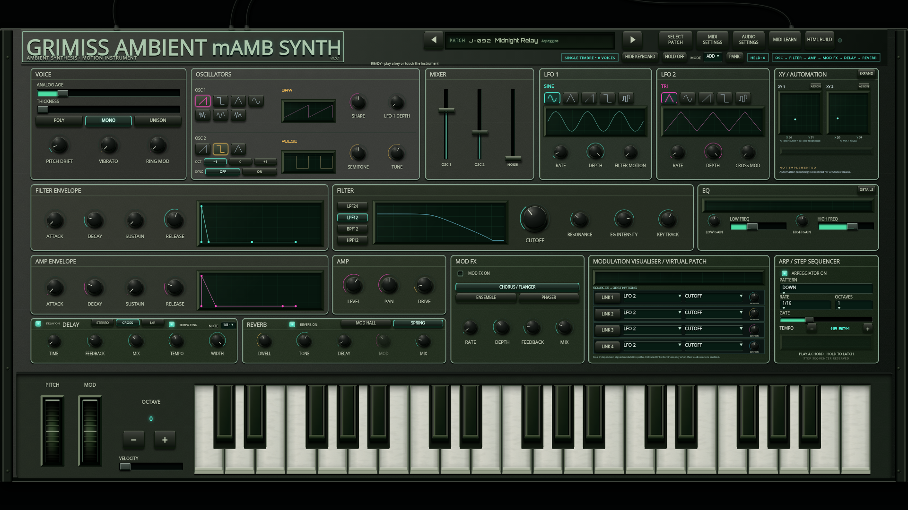
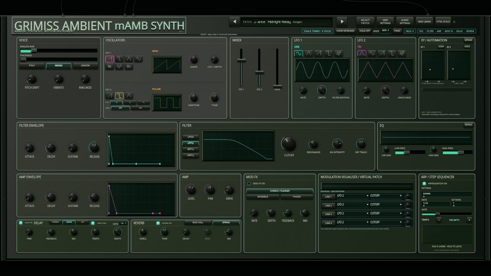
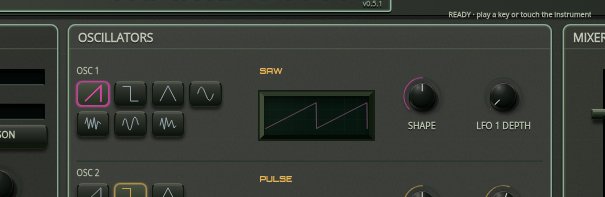
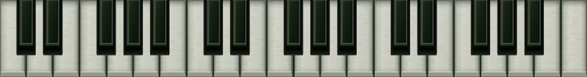

Open the playable synthesizer · Download standalone HTML
The supplied photograph guides the sage boxed wordmark, compact black controls, charcoal metal exposure, soft glass traces and aged ivory keys. The app omits the desk and foam, and its decorative leads are black. Correct parameter labels, all100 presets and the working arpeggiator remain intact.
Comparison normalizes the photographic cabinet to the same frontal faceplate scale. This preserves37 playable notes and the approved interactive layout; the reference's distorted labels are rendered as readable mAMB labels.




Browser checks cover both target sizes with keyboard visible/hidden, live control bindings, audio, MIDI ownership, patch recall and arp operation. The protected audio/MIDI/patch/arp scripts are byte-identical to the working rollback. No physical hardware or human listening verification is claimed.